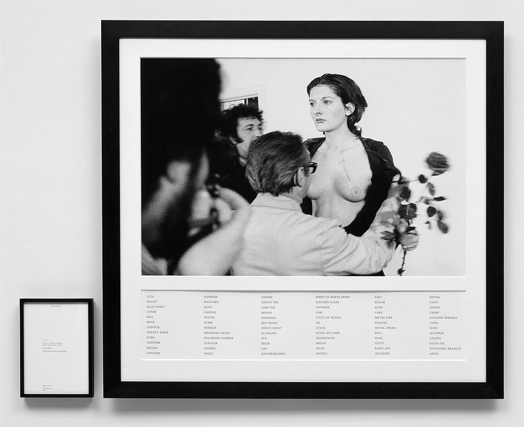

“Male fantasies, male fantasies, is everything run by male fantasies?
Up on a pedestal or down on your knees, it's all a male fantasy: that you're strong enough to take what they dish out, or else too weak to do anything about it.
Even pretending you aren't catering to male fantasies is a male fantasy: pretending you're unseen, pretending you have a life of your own, that you can wash your feet and comb your hair unconscious of the ever-present watcher peering through the keyhole, peering through the keyhole in your own head, if nowhere else.
You are a woman with a man inside watching a woman. You are your own voyeur.”
- Margaret Atwood
content warning: nudity
"The tensions between abandonment and control are at the heart of her series of performances known as Rhythms (1973–74). In Rhythm 0 (1974), she invited audience members to do whatever they wanted to her using any of the 72 items she provided: pen, scissors, chains, axe, loaded pistol, and others. This essay in submission was played out to chilling conclusions—the performance ceased when audience members grew too aggressive. Truly ephemeral, Abramović’s earliest performances were documented only by crude black-and-white photographs and descriptive texts, which she published as an edition years later, choosing the most iconic images to represent the essence of her actions.

Instructions.
There are 72 objects on the table that one can use on me as desired.
Performance.
I am the object.
During this period I take full responsibility.
Duration: 6 hours (8 pm – 2 am).
It began tamely. Someone turned her around. Someone thrust her arms into the air. Someone touched her somewhat intimately. The Neapolitan night began to heat up. In the third hour all her clothes were cut from her with razor blades. In the fourth hour the same blades began to explore her skin. Her throat was slashed so someone could suck her blood. Various minor sexual assaults were carried out on her body. She was so committed to the piece that she would not have resisted rape or murder. Faced with her abdication of will, with its implied collapse of human psychology, a protective group began to define itself in the audience. When a loaded gun was thrust to Marina's head and her own finger was being worked around the trigger, a fight broke out between the audience factions."[7]
As Abramović described it later: "What I learned was that ... if you leave it up to the audience, they can kill you ... I felt really violated: they cut up my clothes, stuck rose thorns in my stomach, one person aimed the gun at my head, and another took it away. It created an aggressive atmosphere. After exactly 6 hours, as planned, I stood up and started walking toward the audience. Everyone ran away, to escape an actual confrontation."